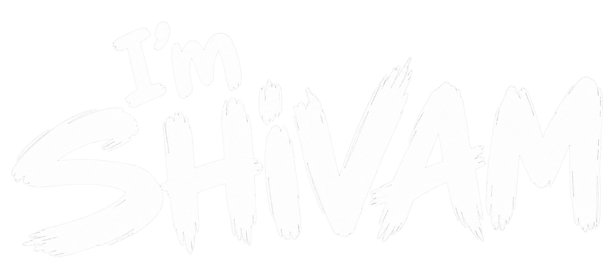
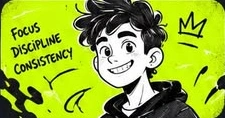

Real Estate Reel
Short-form reel edit
Personal project · 2026Heyyy! ↘

Short-form Video Editor • Motion Graphics
Open to creative opportunities
Short-form edits and motion work.
Short-form reel edit
Personal project · 2026Short-form reel edit
Personal project · 2026Short-form reel edit
Personal project · 2026Short-form reel edit
Personal project · 2026Short-form reel edit
Personal project · 2026Cut & tell Storytelling · Pacing · Audio sync · Color grading · Short-form edits
Motion & polish Captions · Keyframes · Basic compositing · Audio polish · Reel editing

Hey, I'm Shivam Vishwakarma, a passionate video editor who loves turning raw footage into engaging visual stories. I specialize in short-form content, including Instagram Reels, YouTube Shorts, and engaging social media videos that capture attention and keep viewers hooked.
With skills in Adobe Premiere Pro, After Effects, and CapCut, I focus on smooth transitions, precise timing, dynamic effects, color grading, sound mixing, and storytelling to bring every idea to life. I'm always exploring new editing techniques and creative styles to improve my craft and deliver high-quality content.
I believe great editing is more than cutting clips—it's about creating an experience. I'm excited to collaborate with creators, brands, and businesses to transform their ideas into compelling short-form videos that stand out.
Let's create something extraordinary together.
I mainly edit short-form reels for podcasts, real estate, motion graphics, documentaries, and tech, plus simple SaaS animations.
Short, captioned clips built around the strongest moments and clear pacing.
Vertical property tours and listing highlights that make key details easy to see.
Short edits with simple animated text, shapes, and transitions.
Story-led short edits that bring a subject or moment into focus.
Clear, fast-paced edits for product features, tech tips, and updates.
Basic product animations that explain a feature or workflow.
Find the message, audience and feeling.
Review references, choose the strongest moments, and shape the story.
Shape the edit, add motion and sound, and bring it to life.
Listen to feedback. Polish the details. Make it click.
FROM FIRST THOUGHT TO FINAL FRAME
One message. One feeling. Start with the story.
Fresh perspective. Open to feedback. Care in every frame.
FIND ME ONLINE